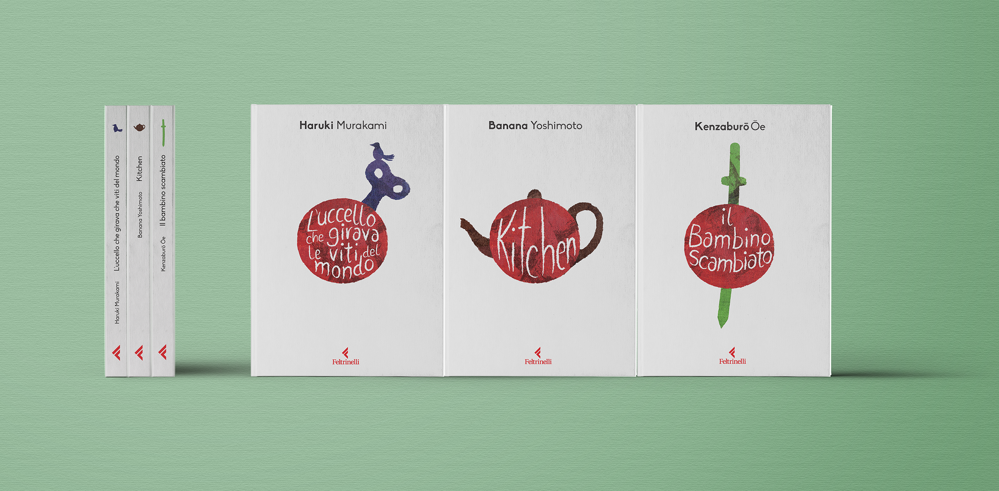

|
Book series design of contemporary Japanese novels The challenge of designing a book series always fascinated me. This project is a collection of the most popular novels by Japanese authors. The design has minimal features, of which prevails the red circle of the Japanese flag. To highlight each volume's plot and uniqueness, I have created a distinctive element that describes part of the story. This element appears again on the spine for a fast identification of the volume. |